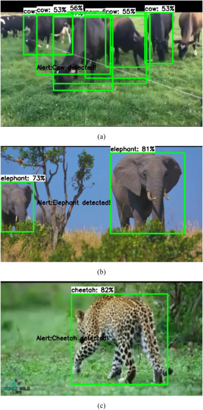

Projects
SmartFitness Assistant
• Designed an AI-driven fitness assistant leveraging machine learning pipelines for personalized workout recommendations.
• Implemented automated activity tracking and real-time feedback to enhance user performance and progress monitoring.
• Optimized ML workflows for data preprocessing, model training, and prediction, ensuring adaptive and intelligent fitness coaching.

• The scope of the project focusing on wild animal detection in residential areas and approach to the forest department
as well as resident to avoid human- wildlife interaction.